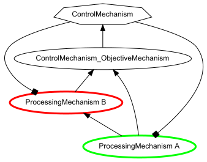

ControlMechanism¶
Subclasses
Contents¶
Overview¶
A ControlMechanism is a ModulatoryMechanism that modulates the value(s) of one or
more Ports of other Mechanisms in the Composition to which it belongs. In general, a ControlMechanism is
used to modulate the ParameterPort(s) of one or more Mechanisms, that determine the value(s) of
the parameter(s) of the function(s) of those Mechanism(s). However, a ControlMechanism
can also be used to modulate the function of InputPorts and/or OutputPort,
much like a Gating Mechanism. A ControlMechanism’s function calculates a
control_allocation: a list of values provided to each of its control_signals. Its control_signals are ControlSignal OutputPorts that are used to modulate
the parameters of other Mechanisms’ function (see Modulation for a more
detailed description of how modulation operates). A ControlMechanism can be configured to monitor the outputs of
other Mechanisms in order to determine its control_allocation, by specifying
these in the monitor_for_control argument of its constructor,
or in the monitor argument of an ObjectiveMechanism` assigned to its
objective_mechanism argument (see Creating a ControlMechanism
below). A ControlMechanism can also be assigned as the controller of a Composition,
which has a special relation to that Composition: it generally executes either before or after all of the other
Mechanisms in that Composition (see Controller Execution). The OutputPorts monitored by the
ControlMechanism or its objective_mechanism, and the parameters it modulates
can be listed using its show method.
ControlMechanisms and a Composition¶
A ControlMechanism can be assigned to a Composition and executed just like any other Mechanism. It can also be
assigned as the controller of a Composition, that has a special relation
to the Composition: it is used to control all of the parameters that have been specified for control in that Composition. A ControlMechanism can be the controller for only one Composition, and a Composition can have only one controller. When a ControlMechanism is assigned as the controller of a
Composition (either in the Composition’s constructor, or using its add_controller
method, the ControlMechanism assumes control over all of the parameters that have been specified for control for Components in the Composition. The Composition’s controller is executed either before or after all of the other Components in the Composition are
executed, including any other ControlMechanisms that belong to it (see Controller Execution). A
ControlMechanism can be assigned as the controller for a Composition by specifying it in
the controller argument of the Composition’s constructor, or by using the Composition’s add_controller method. A Composition’s controller and its associated
Components can be displayed using the Composition’s show_graph method with its
show_control argument assigned as True.
Creating a ControlMechanism¶
A ControlMechanism is created by calling its constructor. When a ControlMechanism is created, the OutputPorts it monitors and the Ports it modulates can be specified in the montior_for_control and objective_mechanism arguments of its constructor, respectively. Each can be specified in several ways, as described below. If neither of those arguments is specified, then only the ControlMechanism is constructed, and its inputs and the parameters it modulates must be specified in some other way.
Specifying OutputPorts to be monitored¶
A ControlMechanism can be configured to monitor the output of other Mechanisms directly (by receiving direct Projections from their OutputPorts), or by way of an ObjectiveMechanism that evaluates those outputs and passes the result to the ControlMechanism (see below for more detailed description). The following figures show an example of each:
 |

|
Note that, in the figures above, the ControlProjections are designated with square “arrowheads”,
and the ControlMechanisms are shown as septagons to indicate that their ControlProjections create a feedback loop
(see Cycles and Feedback; also, see below
regarding specification of a ControlMechanism and associated ObjectiveMechanism in a Composition’s
add_linear_processing_pathway method).
Which configuration is used is determined by how the following arguments of the ControlMechanism’s constructor are specified (also see Examples):
monitor_for_control – a list of OutputPort specifications. If the objective_mechanism argument is not specified (or is False or None) then, when the ControlMechanism is added to a Composition, a MappingProjection is created for each OutputPort specified to the ControlMechanism’s OUTCOME input_port. If the objective_mechanism argument is specified, then the OutputPorts specified in monitor_for_control are assigned to the ObjectiveMechanism rather than the ControlMechanism itself (see Objective Mechanism for details).
objective_mechanism – if this is specfied in any way other than False or None (the default), then an ObjectiveMechanism is created that projects to the ControlMechanism and, when added to a Composition, is assigned Projections from all of the OutputPorts specified either in the monitor_for_control argument of the ControlMechanism’s constructor, or the monitor argument of the ObjectiveMechanism’s constructor (see Objective Mechanism for details). The objective_mechanism argument can be specified in any of the following ways:
False or None – no ObjectiveMechanism is created and, when the ControlMechanism is added to a Composition, Projections from the OutputPorts specified in the ControlMechanism’s monitor_for_control argument are sent directly to ControlMechanism (see specification of monitor_for_control argument).
True – an ObjectiveMechanism is created that projects to the ControlMechanism, and any OutputPorts specified in the ControlMechanism’s monitor_for_control argument are assigned to ObjectiveMechanism’s monitor argument instead (see Objective Mechanism for additional details).
a list of OutputPort specifications; an ObjectiveMechanism is created that projects to the ControlMechanism, and the list of OutputPorts specified, together with any specified in the ControlMechanism’s monitor_for_control argument, are assigned to the ObjectiveMechanism’s monitor argument (see Objective Mechanism for additional details).
a constructor for an ObjectiveMechanism – the specified ObjectiveMechanism is created, adding any OutputPorts specified in the ControlMechanism’s monitor_for_control argument to any specified in the ObjectiveMechanism’s monitor argument . This can be used to specify the
functionused by the ObjectiveMechanism to evaluate the OutputPorts monitored as well as how it weights those OutputPorts when they are evaluated (see below for additional details).an existing ObjectiveMechanism – for any OutputPorts specified in the ControlMechanism’s monitor_for_control argument, an InputPort is added to the ObjectiveMechanism, along with MappingProjection to it from the specified OutputPort. This can be used to specify an ObjectiveMechanism with a custom
functionand weighting of the OutputPorts monitored (see below for additional details).
The OutputPorts monitored by a ControlMechanism or its objective_mechanism
are listed in the ControlMechanism’s monitor_for_control attribute
(and are the same as those listed in the monitor attribute of the
objective_mechanism, if specified).
Note that the MappingProjections created by specification of a ControlMechanism’s monitor_for_control argument or the monitor argument in the constructor for an
ObjectiveMechanism in the ControlMechanism’s objective_mechanism argument supercede any MappingProjections that would otherwise be created for
them when included in the pathway argument of a Composition’s add_linear_processing_pathway method.
Objective Mechanism¶
If an ObjectiveMechanism is specified for a ControlMechanism (in the objective_mechanism argument of its constructor; also see Examples),
it is assigned to the ControlMechanism’s objective_mechanism attribute,
and a MappingProjection is created automatically that projects from the ObjectiveMechanism’s OUTCOME
output_port to the OUTCOME input_port of the
ControlMechanism.
The objective_mechanism is used to monitor the OutputPorts
specified in the monitor_for_control argument of the
ControlMechanism’s constructor, as well as any specified in the monitor argument of
the ObjectiveMechanism’s constructor. Specifically, for each OutputPort specified in either place, an input_port is added to the ObjectiveMechanism. OutputPorts to be monitored (and
corresponding input_ports) can be added to the objective_mechanism later, by using its add_to_monitor method.
The set of OutputPorts monitored by the objective_mechanism are listed in
its monitor attribute, as well as in the ControlMechanism’s monitor_for_control attribute.
When the ControlMechanism is added to a Composition, the objective_mechanism
is also automatically added, and MappingProjectons are created from each of the OutputPorts that it monitors to
its corresponding input_ports. When the Composition is run, the value(s) of the OutputPort(s) monitored are evaluated using the objective_mechanism's function, and the result is assigned to its OUTCOME output_port. That value is then passed to the ControlMechanism’s
OUTCOME input_port, which is used by the ControlMechanism’s function to determine its control_allocation.
If a default ObjectiveMechanism is created by the ControlMechanism (i.e., when True or a list of OutputPorts is
specified for the objective_mechanism argument of the
constructor), then the ObjectiveMechanism is created with its standard default function
(LinearCombination), but using PRODUCT (rather than the default, SUM) as the value of the function’s operation parameter. The result is that the objective_mechanism multiplies the values of the OutputPorts that it
monitors, which it passes to the ControlMechanism. However, if the objective_mechanism is specified using either
a constructor for, or an existing ObjectiveMechanism, then the defaults for the ObjectiveMechanism class – and any
attributes explicitly specified in its construction – are used. In that case, if the LinearCombination with
PRODUCT as its operation parameter are still desired, this must be explicitly
specified. This is illustrated in the following examples.
The following example specifies a ControlMechanism that automatically constructs its objective_mechanism:
>>> from psyneulink import *
>>> my_ctl_mech = ControlMechanism(objective_mechanism=True)
>>> assert isinstance(my_ctl_mech.objective_mechanism.function, LinearCombination)
>>> assert my_ctl_mech.objective_mechanism.function.operation == PRODUCT
Notice that LinearCombination was assigned as the function of the objective_mechanism, and PRODUCT as its operation parameter.
By contrast, the following example explicitly specifies the objective_mechanism argument using a constructor for an ObjectiveMechanism:
>>> my_ctl_mech = ControlMechanism(objective_mechanism=ObjectiveMechanism())
>>> assert isinstance(my_ctl_mech.objective_mechanism.function, LinearCombination)
>>> assert my_ctl_mech.objective_mechanism.function.operation == SUM
In this case, the defaults for the ObjectiveMechanism’s class are used for its function,
which is a LinearCombination function with SUM as its operation parameter.
Specifying the ControlMechanism’s objective_mechanism with a constructor
also provides greater control over how ObjectiveMechanism evaluates the OutputPorts it monitors. In addition to
specifying its function, the monitor_weights_and_exponents argument can be used to parameterize the relative contribution made by the
monitored OutputPorts when they are evaluated by that function (see
Examples).
Specifying Parameters to Control¶
This can be specified in either of two ways (see Examples in ControlSignal):
With a ControlMechanism itself
The parameters controlled by a ControlMechanism can be specified in the control argument of its constructor; the argument must be a specification for one more ControlSignals. The parameter to be controlled must belong to a Component in the same Composition as the ControlMechanism when it is added to the Composition, or an error will occur.
With a Parameter to be controlled by the controller of a Composition
Control can also be specified for a parameter where the parameter itself is specified,
by including the specification of a ControlSignal, ControlProjection, or the keyword CONTROL in a tuple
specification for the parameter. In this case, the specified parameter will be
assigned for control by the controller of any Composition to which its Component belongs,
when the Component is added to the Composition (see ControlMechanisms and a Composition). Conversely, when
a ControlMechanism is assigned as the controller of a Composition, a ControlSignal is
created and assigned to the ControlMechanism for every parameter of any Component in the Composition
that has been specified for control.
In general, a ControlSignal is created for each parameter specified to be controlled by a ControlMechanism. These
are a type of OutputPort that send a ControlProjection to the ParameterPort of the parameter to be
controlled. All of the ControlSignals for a ControlMechanism are listed in its control_signals attribute, and all of its ControlProjections are listed in
its control_projections attribute (see Examples).
Structure¶
Input¶
By default, a ControlMechanism has a single (primary) input_port that is named OUTCOME. If the ControlMechanism has an objective_mechanism, then the OUTCOME input_port receives a
single MappingProjection from the objective_mechanism's OUTCOME
OutputPort (see Objective Mechanism for additional details). Otherwise, when the ControlMechanism is
added to a Composition, MappingProjections are created that project to the ControlMechanism’s OUTCOME input_port from each of the OutputPorts specified in the monitor_for_control argument of its constructor. The value of the
ControlMechanism’s OUTCOME InputPort is assigned to its outcome attribute),
and is used as the input to the ControlMechanism’s function to determine its
control_allocation.
Function¶
A ControlMechanism’s function uses its outcome
attribute (the value of its OUTCOME InputPort) to generate a control_allocation. By default, its function is assigned
the DefaultAllocationFunction, which takes a single value as its input, and assigns that as the value of
each item of control_allocation. Each of these items is assigned as
the allocation for the corresponding ControlSignal in control_signals. This
distributes the ControlMechanism’s input as the allocation to each of its control_signals. This same behavior also applies to any custom function assigned to a
ControlMechanism that returns a 2d array with a single item in its outer dimension (axis 0). If a function is
assigned that returns a 2d array with more than one item, and it has the same number of control_signals, then each ControlSignal is assigned to the corresponding item of the function’s
value. However, these default behaviors can be modified by specifying that individual ControlSignals reference
different items in control_allocation as their variable
(see OutputPort variable).
Output¶
The OutputPorts of a ControlMechanism are ControlSignals (listed in its control_signals attribute). It has a ControlSignal for each parameter specified in the
control argument of its constructor, that sends a ControlProjection to the ParameterPort for the
corresponding parameter. The ControlSignals are listed in the control_signals
attribute; since they are a type of OutputPort, they are also listed in the ControlMechanism’s output_ports attribute. The parameters modulated by a ControlMechanism’s ControlSignals can be
displayed using its show method. By default, each ControlSignal is assigned as its
allocation the value of the corresponding item of the ControlMechanism’s
control_allocation; however, subtypes of ControlMechanism may assign
allocations differently. The default_allocation attribute can be used to
specify a default allocation for ControlSignals that have not been assigned their own default_allocation. The allocation is used by each ControlSignal to
determine its intensity, which is then assigned to the value
of the ControlSignal’s ControlProjection. The value of the ControlProjection is used
by the ParameterPort to which it projects to modify the value of the parameter it controls (see
Modulation for description of how a ControlSignal modulates the value of a parameter).
Costs and Net Outcome¶
A ControlMechanism’s control_signals are each associated with a set of costs, that are computed individually by each ControlSignal when they are executed by the ControlMechanism. The costs last computed by the control_signals are assigned to the ControlMechanism’s costs attribute. A ControlMechanism
also has a set of methods – combine_costs, compute_reconfiguration_cost, and compute_net_outcome –
that can be used to compute the combined costs of its control_signals, a reconfiguration_cost based on their change
in value, and a net_outcome (the value of the ControlMechanism’s
OUTCOME input_port minus its combined costs),
respectively (see Computation of Costs and Net_Outcome below for additional details). These methods are used by some
subclasses of ControlMechanism (e.g., OptimizationControlMechanism) to compute their control_allocation. Each method is assigned a default function, but can be assigned a custom
functions in a corrsponding argument of the ControlMechanism’s constructor (see links to attributes for details).
Reconfiguration Cost
A ControlMechanism’s reconfiguration_cost is distinct from the
costs of the ControlMechanism’s ControlSignals, and in particular it is not the same as their
adjustment_cost. The latter, if specified by a ControlSignal, is computed
individually by that ControlSignal using its adjustment_cost_function, based
on the change in its intensity from its last execution. In contrast, a ControlMechanism’s
reconfiguration_cost is computed by its compute_reconfiguration_cost function, based on the change in its control_allocation
ControlMechanism.control_allocation> from the last execution, that will be applied to all of its
control_signals. By default, compute_reconfiguration_cost is assigned as the Distance function with the EUCLIDEAN metric).
Execution¶
A ControlMechanism is executed using the same sequence of actions as any Mechanism, with the following additions.
The ControlMechanism’s function takes as its input the value of
its OUTCOME input_port (also contained in outcome).
It uses that to determine the control_allocation, which specifies the value
assigned to the allocation of each of its ControlSignals. Each
ControlSignal uses that value to calculate its intensity, as well as its cost to modulate the value of the ParameterPort(s) for the parameter(s) it controls. Note that
the modulated value of the parameter may not be used until the subsequent TRIAL of execution,
if the ControlMechansim is not executed until after the Component to which the paramter belongs is executed
(see note).
Computation of Costs and Net_Outcome¶
Once the ControlMechanism’s function has executed, if compute_reconfiguration_cost has been specified, then it is used to compute the
reconfiguration_cost for its control_allocation (see above. After that, each
of the ControlMechanism’s control_signals calculates its cost, based on its intensity. The ControlMechanism then combines these
with the reconfiguration_cost using its combine_costs function, and the result is assigned to the costs
attribute. Finally, the ControlMechanism uses this, together with its outcome attribute,
to compute a net_outcome using its compute_net_outcome function. This is used by some subclasses of ControlMechanism
(e.g., OptimizationControlMechanism) to compute its control_allocation
for the next TRIAL of execution.
Execution as Controller of a Composition¶
if a ControlMechanism is assigned as the controller of a `Composition,
then it is executed either before or after all of the other Mechanisms executed in a TRIAL for that Composition, depending on the value assigned to the Composition’s controller_mode attribute (see Controller Execution). If a ControlMechanism is added to
a Composition for which it is not a controller, then it executes in the same way as any
Mechanism, based on its place in the Composition’s graph. Because
ControlProjections are likely to introduce cycles (recurrent connection loops) in the
graph, the effects of a ControlMechanism and its projections will generally not be applied in the first TRIAL (see Cycles and Feedback for configuring the initialization of feedback
loops in a Composition; also see Scheduler for a description of additional ways in which a ControlMechanism and its
dependents can be scheduled to execute).
Examples
The examples below focus on the specificaiton of the objective_mechanism
for a ControlMechanism. See Control Signal Examples for examples of how to specify the
ControlSignals for a ControlMechanism.
The following example creates a ControlMechanism by specifying its objective_mechanism using a constructor
that specifies the OutputPorts to be monitored by its objective_mechanism
and the function used to evaluate these:
>>> my_mech_A = ProcessingMechanism(name="Mech A")
>>> my_DDM = DDM(name="My DDM")
>>> my_mech_B = ProcessingMechanism(function=Logistic,
... name="Mech B")
>>> my_control_mech = ControlMechanism(
... objective_mechanism=ObjectiveMechanism(monitor=[(my_mech_A, 2, 1),
... my_DDM.output_ports[RESPONSE_TIME]],
... name="Objective Mechanism"),
... function=LinearCombination(operation=PRODUCT),
... control_signals=[(THRESHOLD, my_DDM),
... (GAIN, my_mech_B)],
... name="My Control Mech")
This creates an ObjectiveMechanism for the ControlMechanism that monitors the primary OutputPort
of my_mech_A and the RESPONSE_TIME OutputPort of my_DDM; its function first multiplies the former by 2,
then takes product of their values and passes the result as the input to the ControlMechanism. The ControlMechanism’s
function uses this value to determine the allocation for its ControlSignals, that control
the value of the threshold parameter of the DriftDiffusionAnalytical Function
for my_DDM and the gain parameter of the Logistic Function for my_transfer_mech_B.
The following example specifies the same set of OutputPorts for the ObjectiveMechanism, by assigning them directly to the objective_mechanism argument:
>>> my_control_mech = ControlMechanism(
... objective_mechanism=[(my_mech_A, 2, 1),
... my_DDM.output_ports[RESPONSE_TIME]],
... control_signals=[(THRESHOLD, my_DDM),
... (GAIN, my_mech_B)])
Note that, while this form is more succinct, it precludes specifying the ObjectiveMechanism’s function. Therefore, the values of the monitored OutputPorts will be added (the default) rather than multiplied.
The ObjectiveMechanism can also be created on its own, and then referenced in the constructor for the ControlMechanism:
>>> my_obj_mech = ObjectiveMechanism(monitored_output_ports=[(my_mech_A, 2, 1),
... my_DDM.output_ports[RESPONSE_TIME]],
... function=LinearCombination(operation=PRODUCT))
>>> my_control_mech = ControlMechanism(
... objective_mechanism=my_obj_mech,
... control_signals=[(THRESHOLD, my_DDM),
... (GAIN, my_mech_B)])
Here, as in the first example, the constructor for the ObjectiveMechanism can be used to specify its function, as well as the OutputPort that it monitors.
Class Reference¶
-
class
psyneulink.core.components.mechanisms.modulatory.control.controlmechanism.ControlMechanism(monitor_for_control=None, objective_mechanism=None, function=Linear, default_allocation=None, control=None, modulation=MULTIPLICATIVE, combine_costs=np.sum, compute_reconfiguration_cost=None, compute_net_outcome=lambda x, y: ...)¶ Subclass of ModulatoryMechanism that modulates the parameter(s) of one or more Component(s). See Mechanism for additional arguments and attributes.
- Parameters
monitor_for_control (List[OutputPort or Mechanism] : default None) – specifies the OutputPorts to be monitored by the ObjectiveMechanism, if specified in the objective_mechanism argument (see Objective Mechanism), or directly by the ControlMechanism itself if an objective_mechanism is not specified. If any specification is a Mechanism (rather than its OutputPort), its primary OutputPort is used (see Specifying OutputPorts to be monitored for additional details).
objective_mechanism (ObjectiveMechanism or List[OutputPort specification] : default None) – specifies either an ObjectiveMechanism to use for the ControlMechanism, or a list of the OutputPorts it should monitor; if a list of OutputPort specifications is used, a default ObjectiveMechanism is created and the list is passed to its monitor argument, along with any OutputPorts specified in the ControlMechanism’s monitor_for_control argument.
function (TransferFunction : default Linear(slope=1, intercept=0)) – specifies function used to combine values of monitored OutputPorts.
default_allocation (number, list or 1d array : None) – specifies the default_allocation of any
control_signalsfor which the default_allocation was not specified in its constructor (seedefault_allocationfor additional details).control (ControlSignal specification or list[ControlSignal specification, ..]) – specifies the parameters to be controlled by the ControlMechanism; a ControlSignal is created for each (see Specifying ControlSignals for details of specification).
modulation (str : MULTIPLICATIVE) – specifies the default form of modulation used by the ControlMechanism’s ControlSignals, unless they are individually specified.
combine_costs (Function, function or method : default np.sum) – specifies function used to combine the
costof the ControlMechanism’scontrol_signals; must take a list or 1d array of scalar values as its argument and return a list or array with a single scalar value.compute_reconfiguration_cost (Function, function or method : default None) – specifies function used to compute the ControlMechanism’s
reconfiguration_cost; must take a list or 2d array containing two lists or 1d arrays, both with the same shape as the ControlMechanism’s control_allocation attribute, and return a scalar value.compute_net_outcome (Function, function or method : default lambda outcome, cost: outcome-cost) – function used to combine the values of its
outcomeandcostsattributes; must take two 1d arrays (outcome and cost) with scalar values as its arguments and return an array with a single scalar value.
-
objective_mechanism¶ ObjectiveMechanism that monitors and evaluates the values specified in the ControlMechanism’s objective_mechanism argument, and transmits the result to the ControlMechanism’s OUTCOME
input_port.- Type
-
monitor_for_control¶ each item is an OutputPort monitored by the ControlMechanism or its
objective_mechanismif that is specified (see Specifying OutputPorts to be monitored); in the latter case, the list returned is ObjectiveMechanism’smonitorattribute.- Type
List[OutputPort]
-
monitored_output_ports_weights_and_exponents¶ each tuple in the list contains the weight and exponent associated with a corresponding OutputPort specified in
monitor_for_control; ifobjective_mechanismis specified, these are the same as those in the ObjectiveMechanism’smonitor_weights_and_exponentsattribute, and are used by the ObjectiveMechanism’sfunctionto parametrize the contribution made to its output by each of the values that it monitors (see ObjectiveMechanism Function).- Type
List[Tuple(float, float)]
-
input_port¶ the ControlMechanism’s primary InputPort, named OUTCOME; this receives a MappingProjection from the OUTCOME OutputPort of
objective_mechanismif that is specified; otherwise, it receives MappingProjections from each of the OutputPorts specifed inmonitor_for_control(see Input for additional details).- Type
-
outcome¶ the
valueof the ControlMechanism’s OUTCOMEinput_port.- Type
1d array
-
function¶ determines how the
values of the OutputPorts specified in the monitor_for_control argument of the ControlMechanism’s constructor are used to generate itscontrol_allocation.- Type
TransferFunction : default Linear(slope=1, intercept=0)
-
default_allocation¶ determines the default_allocation of any
control_signalsfor which the default_allocation was not specified in its constructor; if it is None (not specified) then the ControlSignal’s parameters.allocation.default_value is used. See documentation for default_allocation argument of ControlSignal constructor for additional details.- Type
number, list or 1d array
-
control_allocation¶ each item is the value assigned as the
allocationfor the corresponding ControlSignal listed in thecontrol_signalsattribute; the control_allocation is the same as the ControlMechanism’svalueattribute).- Type
2d array
-
control_signals¶ list of the ControlSignals for the ControlMechanism, including any inherited from a Composition for which it is a
controller(same as ControlMechanism’soutput_portsattribute); each sends a ControlProjection to the ParameterPort for the parameter it controls- Type
ContentAddressableList[ControlSignal]
-
compute_reconfiguration_cost¶ function used to compute the ControlMechanism’s
reconfiguration_cost; result is a scalar value representing the difference — defined by the function — between the values of the ControlMechanism’s current and lastcontrol_alloction, that can be accessed byreconfiguration_costattribute.- Type
Function, function or method
-
reconfiguration_cost¶ result of
compute_reconfiguration_costfunction, that computes the difference between the values of the ControlMechanism’s current and lastcontrol_alloction; value is None and is ignored ifcompute_reconfiguration_costhas not been specified.A ControlMechanism’s reconfiguration_cost is not the same as the
adjustment_costof its ControlSignals (see Reconfiguration Cost for additional details).- Type
scalar
-
costs¶ current costs for the ControlMechanism’s
control_signals, computed for each using itscompute_costsmethod.- Type
list
-
combine_costs¶ function used to combine the
costof itscontrol_signals; result is an array with a scalar value that can be accessed bycombined_costs.Note
This function is distinct from the
combine_costs_functionof a ControlSignal. The latter combines the different costs for an individual ControlSignal to yield its overallcost; the ControlMechanism’scombine_costsfunction combines thosecosts for itscontrol_signals.- Type
Function, function or method
-
combined_costs¶ result of the ControlMechanism’s
combine_costsfunction.- Type
1d array
-
compute_net_outcome¶ function used to combine the values of its
outcomeandcostsattributes; result is an array with a scalar value that can be accessed by the thenet_outcomeattribute.- Type
Function, function or method
-
net_outcome¶ result of the ControlMechanism’s
compute_net_outcomefunction.- Type
1d array
-
control_projections¶ list of ControlProjections that project from the ControlMechanism’s
control_signals.- Type
List[ControlProjection]
-
modulation¶ the default form of modulation used by the ControlMechanism’s ControlSignals, unless they are individually specified.
- Type
str
-
outputPortTypes¶ alias of
psyneulink.core.components.ports.modulatorysignals.controlsignal.ControlSignal
-
_validate_params(request_set, target_set=None, context=None)¶ Validate SYSTEM, monitor_for_control, CONTROL_SIGNALS and GATING_SIGNALS
-
_instantiate_objective_mechanism(context=None)¶ # FIX: ??THIS SHOULD BE IN OR MOVED TO ObjectiveMechanism Assign InputPort to ObjectiveMechanism for each OutputPort to be monitored;
uses _instantiate_monitoring_input_port and _instantiate_control_mechanism_input_port to do so. For each item in self.monitored_output_ports: - if it is a OutputPort, call _instantiate_monitoring_input_port() - if it is a Mechanism, call _instantiate_monitoring_input_port for relevant Mechanism_Base.output_ports
(determined by whether it is a
TERMINALMechanism and/or MonitoredOutputPortsOption specification)- each InputPort is assigned a name with the following format:
‘<name of Mechanism that owns the monitoredOutputPort>_<name of monitoredOutputPort>_Monitor’
Notes: * self.monitored_output_ports is a list, each item of which is a Mechanism_Base.output_port from which a
Projection will be instantiated to a corresponding InputPort of the ControlMechanism
- self.input_ports is the usual ordered dict of ports,
each of which receives a Projection from a corresponding OutputPort in self.monitored_output_ports
-
_instantiate_input_ports(context=None)¶ Call Port._instantiate_input_ports to instantiate orderedDict of InputPort(s)
- This is a stub, implemented to allow Mechanism subclasses to override _instantiate_input_ports
or process InputPorts before and/or after call to _instantiate_input_ports
-
_instantiate_output_ports(context=None)¶ Call Port._instantiate_output_ports to instantiate orderedDict of OutputPort(s)
- This is a stub, implemented to allow Mechanism subclasses to override _instantiate_output_ports
or process InputPorts before and/or after call to _instantiate_output_ports
-
_instantiate_control_signals(context)¶ Subclassess can override for class-specific implementation (see OptimiziationControlMechanism for example)
-
_instantiate_control_signal(control_signal, context=None)¶ Parse and instantiate ControlSignal (or subclass relevant to ControlMechanism subclass)
- Temporarily assign variable to default allocation value to avoid chicken-and-egg problem:
value, output_ports and control_signals haven’t been expanded yet to accomodate the new ControlSignal; reassign control_signal.variable to actual OWNER_VALUE below, once value has been expanded
-
_instantiate_control_signal_type(control_signal_spec, context)¶ Instantiate actual ControlSignal, or subclass if overridden
-
_check_for_duplicates(control_signal, control_signals, context)¶ Check that control_signal is not a duplicate of one already instantiated for the ControlMechanism
- Can happen if control of parameter is specified in constructor for a Mechanism
and also in the ControlMechanism’s control arg
control_signals arg passed in to allow override by subclasses
-
show()¶ Display the OutputPorts monitored by ControlMechanism’s
objective_mechanismand the parameters modulated by itscontrol_signals.
-
add_to_monitor(monitor_specs, context=None)¶ Instantiate OutputPorts to be monitored by ControlMechanism’s
objective_mechanism.- monitored_output_ports can be any of the following:
list with any of the above.
If any item is a Mechanism, its primary OutputPort is used. OutputPorts must belong to Mechanisms in the same
Systemas the ControlMechanism.
-
_activate_projections_for_compositions(composition=None)¶ Activate eligible Projections to or from Nodes in Composition. If Projection is to or from a node NOT (yet) in the Composition, assign it the node’s aux_components attribute but do not activate it.
-
_apply_control_allocation(control_allocation, runtime_params, context)¶ Update values to
control_signalsbased on specifiedcontrol_allocation(used by controller of a Composition in simulations)
-
property
_dependent_components¶ Returns a set of Components that will be executed if this Component is executed
-
exception
psyneulink.core.components.mechanisms.modulatory.control.controlmechanism.ControlMechanismError(error_value)¶
-
class
psyneulink.core.components.mechanisms.modulatory.control.controlmechanism.DefaultAllocationFunction(default_variable=None, params=None, owner=None)¶ Take a single 1d item and return a 2d array with n identical items Takes the default input (a single value in the OUTCOME InputPort of the ControlMechanism), and returns the same allocation for each of its
control_signals.-
reset(*args, force=False, context=None, **kwargs)¶ If the component’s execute method involves execution of an
IntegratorFunctionFunction, this method effectively begins the function’s accumulation over again at the specified value, and may update related values on the component, depending on the component type. Otherwise, it simply reassigns the Component’s value based on its default_variable.
-